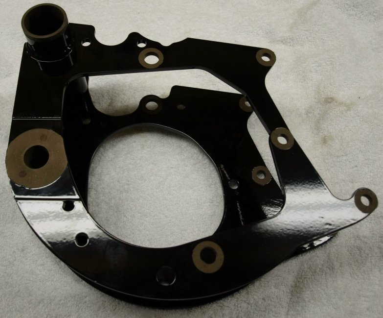
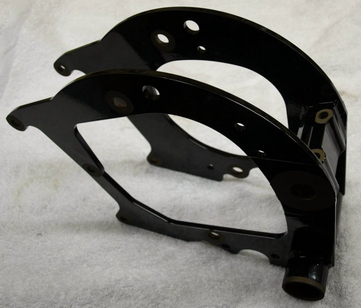

We are having this engine mount manufactured and powder coated locally. This engine mount is identical to the MK3 rear engine mount except that the side plates have been modified for our starter motor and the swingarm spindle mount has been designed differently to facilitate a more efficient way to manufacture. This has brought the cost down compared to milling a new Andover Norton MK3 engine mount.

We have not painted or polished the rear engine mount. It is recommended that you apply a couple of coats of wax to the mount prior to installation. After waxing, clean the bare spots with a good contact cleaner on a rag before applying a light coat of a rust inhibitor paint using a small brush. For the spots where you need a good ground, clean the spot like it was going to be painted then rub some penetrate lubricant on the spot. Give the bare spots another coat of penetrate lubricant just prior to assembling.
The ground spots that you should leave bare are the front three inside mounting bolt holes that bolt the engine mount to the engine. The starter motor is grounded through the starter bracket rear mounting bolt that fastens the starter bracket to the engine mount, therefore leave the top two inside gearbox mounting holes bare.
Norton Parts
This page was written and designed by F. H. Eaton
& Associates if you have any questions or comments please
contact us at infon@fheaton.com